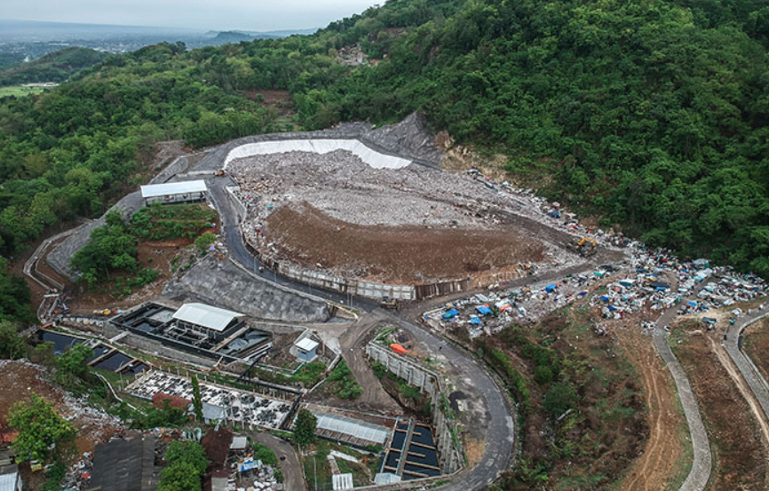

Gunungan Sampah di TPST Piyungan: Ancaman bagi Lingkungan dan Kehidupan

Sampah menjadi salah satu permasalahan lingkungan yang masih sulit diatasi di Indonesia. Setiap hari, jumlah sampah terus meningkat akibat aktivitas manusia dan penggunaan barang sekali pakai, terutama plastik. Jika tidak dikelola dengan baik, sampah dapat menyebabkan pencemaran lingkungan yang berdampak pada kesehatan manusia dan kelestarian alam.
Salah satu contoh permasalahan sampah yang terjadi di Indonesia adalah kondisi TPST Piyungan di Yogyakarta. TPST Piyungan merupakan tempat pengolahan sampah yang selama bertahun-tahun digunakan untuk menampung sampah dari Kota Yogyakarta, Kabupaten Sleman, dan Kabupaten Bantul. Namun, jumlah sampah yang masuk setiap harinya terus meningkat hingga menyebabkan sampah menggunung dan melebihi kapasitas penampungan. Kondisi tersebut akhirnya menyebabkan TPST Piyungan ditutup permanen oleh pemerintah pada tahun 2024.
Penutupan TPST Piyungan menimbulkan permasalahan baru bagi masyarakat Yogyakarta. Banyak warga menjadi kesulitan membuang sampah rumah tangga karena tempat pembuangan akhir sudah tidak lagi beroperasi. Di beberapa wilayah, sampah mulai menumpuk di pinggir jalan dan tempat pembuangan sementara akibat belum optimalnya sistem pengelolaan sampah pengganti. Tumpukan sampah liar tersebut menimbulkan bau tidak sedap dan mengganggu kenyamanan masyarakat.
Selain menimbulkan gangguan lingkungan, sampah yang menggunung juga dapat menyebabkan berbagai jenis pencemaran. Sampah yang membusuk menghasilkan bau dan gas yang mencemari udara di sekitar lingkungan. Cairan hasil pembusukan sampah dapat meresap ke tanah dan mencemari sumber air. Pada kondisi tertentu, pembakaran sampah juga menghasilkan asap berbahaya yang dapat mengganggu kesehatan manusia, terutama sistem pernapasan.
Permasalahan TPST Piyungan menunjukkan bahwa pengelolaan sampah bukan hanya tanggung jawab pemerintah, tetapi juga seluruh masyarakat. Kesadaran untuk mengurangi penggunaan plastik sekali pakai, memilah sampah, dan melakukan daur ulang sangat diperlukan untuk mengurangi jumlah sampah yang terus meningkat. Oleh karena itu, diperlukan solusi pengelolaan sampah yang lebih berkelanjutan agar permasalahan lingkungan akibat sampah tidak semakin parah di masa depan.
Pertanyaan Pemantik
1. Mengapa penumpukan sampah dapat menyebabkan pencemaran lingkungan?
2. Apa dampak penutupan TPST Piyungan bagi masyarakat Yogyakarta?
3. Bagaimana sampah dapat mencemari tanah, air, dan udara?
4. Menurutmu, solusi apa yang dapat dilakukan untuk mengurangi permasalahan sampah di lingkungan sekitar?